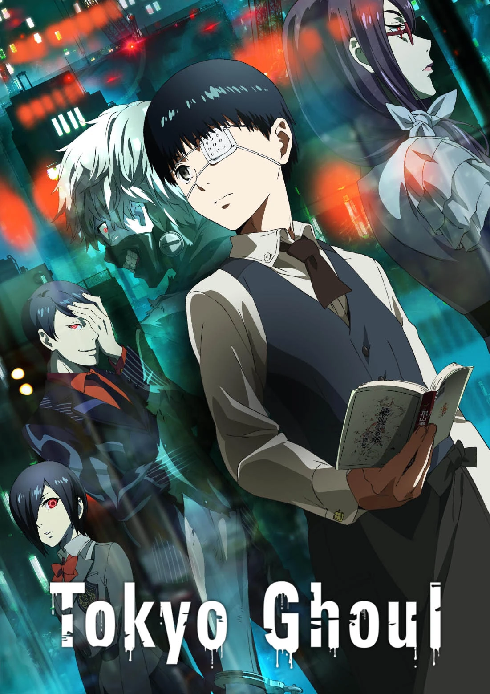

O mundo de One Piece é povoado por humanos e muitas outras raças,
como anões, homens-peixe e gigantes. É coberto por dois vastos
oceanos, que são divididos por uma enorme cordilheira chamada Red
Line; A Grand Line, um mar que corre perpendicularmente à Red Line,
divide-os em quatro mares: North Blue, East Blue, West Blue e South
Blue. Ao redor da Grand Line, estão duas regiões chamadas Calm
Belts, semelhantes às latitudes dos cavalos, que quase não
experimentam ventos ou correntes oceânicas e são o terreno fértil
para enormes criaturas marinhas chamadas reis-dos-mares. Por isso,
os Calm Belts são barreiras muito eficazes para quem tenta entrar na
Grand Line. No entanto, navios da Marinha, membros de uma
organização intergovernamental conhecida como Governo Mundial, são
capazes de usar uma pedra de prisma-do-mar (em japonês: 海楼石,
transl. Kairōseki) para mascarar sua presença dos reis-dos-mares e
podem simplesmente passar pelos Calm Belts. Todos os outros navios
são forçados a seguir uma rota mais perigosa, passando por uma
montanha na primeira interseção da Grand Line e da Red Line, um
sistema de canais conhecido como Reverse Mountain. A água do mar de
cada um dos quatro mares sobe aquela montanha e se funde no topo
para fluir por um quinto canal e entrar na primeira metade da Grand
Line, chamada Paraíso por causa da comparação com a segunda metade.
Trailer
Jujutsu Kaisen
Sinopse
Yuuji Itadori é um estudante do ensino médio que vive em Sendai com
seu avô. Ele evita regularmente a equipe de pista devido à sua
aversão ao atletismo, apesar de seu talento inato para o esporte. Em
vez disso, ele decide ingressar no Clube de Pesquisa Oculta, onde
pode relaxar e sair com seus veteranos, e deixar a escola às 17h
para visitar seu avô no hospital. Enquanto ele está no leito de
morte, seu avô envia duas mensagens poderosas dentro de Yuuji -
"sempre ajude as pessoas" e "morra cercado por uma multidão"
Após a morte de seu avô, Yuuji interpreta essas mensagens como uma
afirmação - todo mundo merece "uma morte adequada", ele então é
confrontado por Megumi Fushiguro, um xamã (巫? Shaman) que o informa
de um talismã de alto grau amaldiçoado em sua escola com o qual
Yuuji recentemente entrou em contato. Seus amigos no Clube Oculto
abriram o talismã, um dedo podre, que atraiu Maldições para a
escola, criaturas provocadas por emoções negativas e fortalecidas
pelo consumo de poderes mágicos presentes em xamãs ou em tais
encantos. Incapaz de derrotar as Maldições devido à sua falta de
poderes mágicos, Yuuji engole o dedo para proteger Megumi e seus
amigos e se torna o anfitrião de Sukuna, uma poderosa Maldição.Cap.
1 Devido à natureza maligna de Sukuna, todos os xamãs devem
exorcizá-lo imediatamente. No entanto, apesar de possuído, Yuuji
ainda é capaz de manter o controle sobre seu corpo em sua maior
parte. Vendo isso, Satoru Gojou, professor de Megumi, decide levá-lo
ao Colégio Técnico Metropolitano de Tóquio para propor um plano a
seus superiores - adiar a sentença de morte de Yuuji até que ele
consuma todos os dedos de Sukuna, permitindo que eles o matem de uma
vez por todas.
Trailer
Tokyo Ghoul

Sinopse
A história de Tokyo Ghoul gira em torno de Ken Kaneki, um estudante
que mal sobrevive a um encontro mortal com Rize Kamishiro, uma
mulher que se revela um ghoul; ghoul são criaturas semelhantes a
humanos que caçam e devoram carne humana, com essa revelação Rize
ataca Kaneki que é ferido gravemente, tentando fugir
desesperadamente Rize o encurrala até que vários canos de metal caem
em Rize aparentemente a matando, logo após isso Kaneki desmaia
devido aos ferimentos e é levado para o hospital em estado critico.
Depois de recuperado, ele descobre que, de alguma forma, foi
submetido a uma cirurgia que o transformou em meio-ghoul, e que,
assim como eles, deverá consumir carne humana para poder sobreviver.
Sem ninguém pra recorrer, ele é levado pelo gerente(Kuzen) de uma
cafeteria chamada "Anteiku", onde lhe ensinam a viver como
meio-humano e meio-ghoul e a interagir com a sociedade dos ghouls e
as suas facções, enquanto se esforça para conviver com os humanos.